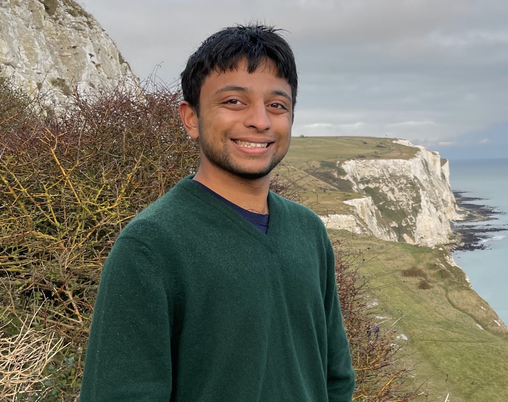

Speakers

Hao Su is "Haoqing" Distinguished Professor at Fudan University and Inaugural Dean of the Fudan Institute of General Physical Intelligence. His research spans perception, 3D understanding, and embodied control, with foundational contributions including ImageNet, ShapeNet, PointNet, and the ManiSkill benchmark. He is a recipient of the IEEE PAMI Young Researcher Award, NSF CAREER Award, and serves as Program Committee Co-Chair of CVPR 2025. He holds a Ph.D. in Computer Science from Stanford and a Ph.D. in Mathematics from Beihang University.

Ashwin Balakrishna is a Researcher at Physical Intelligence working on building scalable robot data collection and evaluation pipelines for large-scale robot learning. Previously, he was a Senior Research Scientist at Google Deepmind on the Gemini Robotics team where he worked on VLA post-training and improving instruction following capabilities. He did his PhD in Computer Science in the AUTOLAB at UC Berkeley and completed his bachelor's degree at Caltech in Electrical Engineering.

Haozhi Qi is a Member of Technical Staff at Amazon FAR and an incoming Assistant Professor at the University of Chicago. His research spans robotics and AI, with a particular focus on algorithms and systems for dexterous manipulation. He is a recipient of the Lotfi A. Zadeh Prize, was named an RSS Pioneer 2026, and received the EECS Evergreen Award for Excellence in Undergraduate Research Mentoring.
Simar Kareer is a PhD student at Georgia Tech advised by Danfei Xu and Judy Hoffman. His research focuses on scaling robot learning from egocentric human experience, including EgoMimic and EgoVerse. He previously led Human2Robot at Physical Intelligence and is currently interning with NVIDIA GEAR. His work has been featured in the Meta AI Blog and The Washington Post.